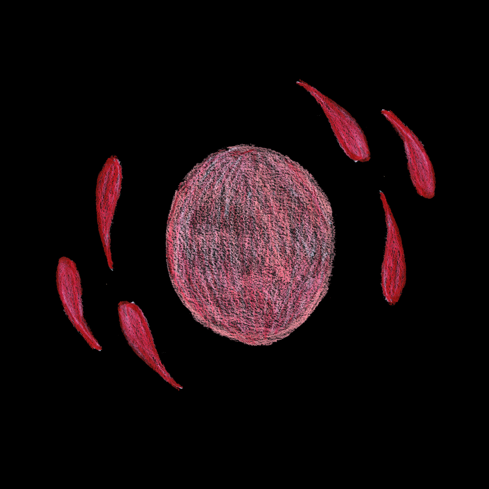
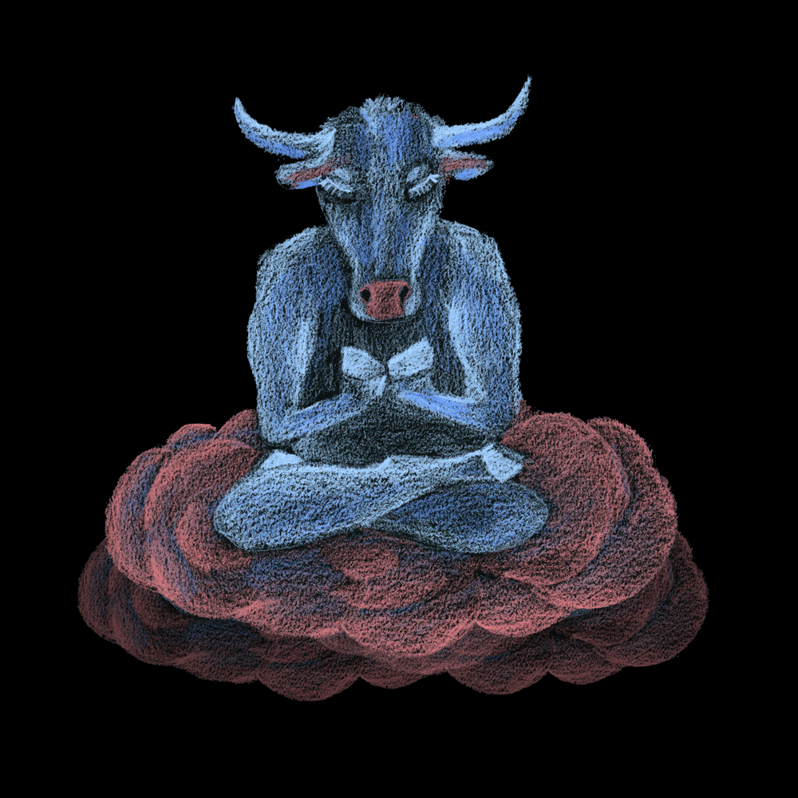
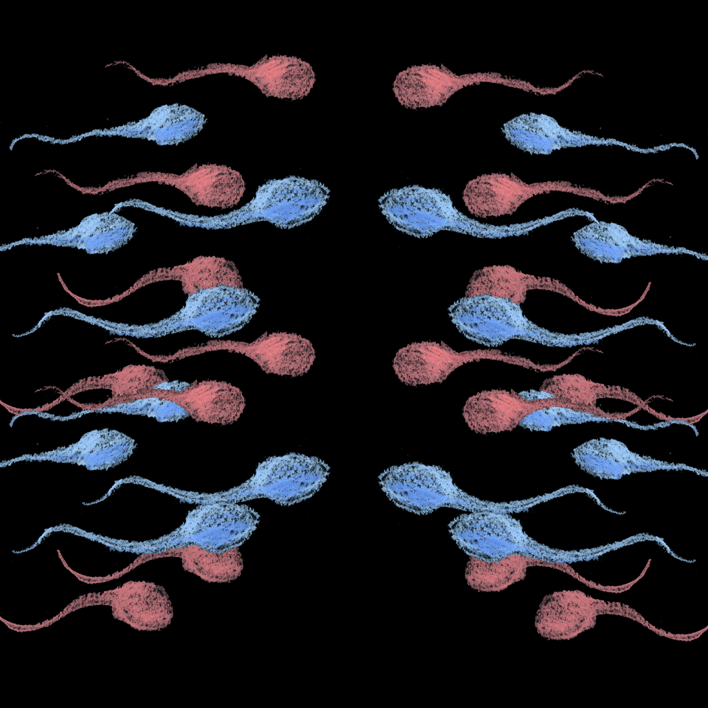
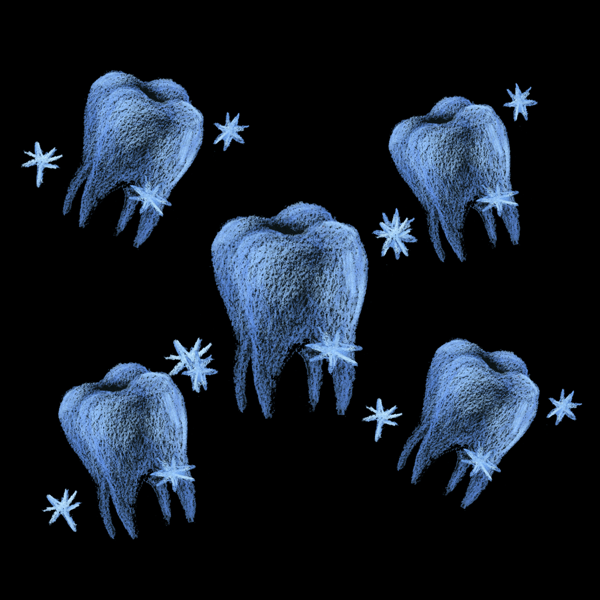

METAMORPHOSIS
Been pondering the metamorphoses of our bodies… mine went from ova, to curly legged baby to a gawky 5 foot 7 teen.

Rounded out into a middle aging beauty then onto my least favorite so far: this hemiplegic tourist and foreigner in the getting real old camp.Not liking it so much. Younger was way better. There's all this bull floating about getting wiser.

Lemme Finish.
I am very grateful and thrilled to have these bodies clad about me and I apologize to the opportunistic sperm starter kit if I cast aspersions on its motives. Life was the motive. As I sit here with a sore now bony ass, I sure would have it another way. Yet if this is what is available to me, I happily inhabit it.

Some buddha sort said pain is inevitable, suffering optional. Horse manure. Pain hurts. Since we have stainless steel why ain't our teeth made of it?

And why can’t puke come out your bum and furthermore? My nephew once said, "You know what really bugs me?... “The Universe." I agree with you, bubba.